risorse | sommatore binario elettrico
Ho intrapreso questo progetto per dimostrare che un semplice circuito elettrico composto di soli interruttori (deviatori, per la precisione) può far di conto. Vuole essere una risposta concreta a una domanda che mi è stata rivolta spesso, di spiegare cioé come funziona una calcolatrice elettronica.
Per ridurre i costi al minimo ho pensato di realizzare un sommatore binario a tre bit: questo riduce il numero di deviatori – il componente più caro – a sei, cui si aggiungono quattro LED per rappresentare i bit della somma, più eventuali altri tre LED per i riporti:
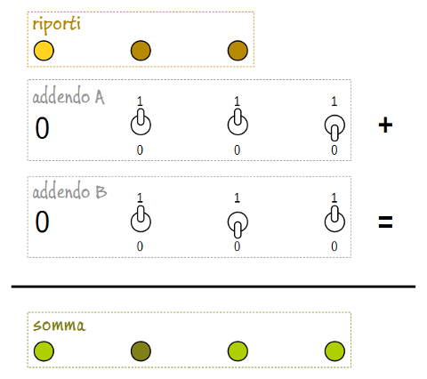Schema di massima del sommatore
Lo schema mostra l'aspetto che avrà il sommatore. Com'è logico attendersi, il bit meno significativo si trova a destra, quello più significativo a sinistra. Il sommatore è raffigurato mentre esegue l'operazione 5 + 6 = 11, in binario 0110 + 0101 = 1011.
Il circuito del sommatore sarà formato da un semi-sommatore per il bit meno significativo e una serie di sommatori completi per ognuno dei bit successivi (nel mio caso, due).
Il circuito del semi-sommatore si occupa di sommare i due bit meno significativi (A0 e B0) e produce il bit somma (S0) e quello del riporto (C0):
| A0 | B0 | S0 | C0 | |
|---|---|---|---|---|
| 0 | 0 | 0 | 0 | |
| 0 | 1 | 1 | 0 | |
| 1 | 0 | 1 | 0 | |
| 1 | 1 | 0 | 1 |
Tavola di verità del semi-sommatore
Dalla tabella si ricavano facilmente le espressioni logiche per le due uscite:
S0 = A0B0 + A0B0
C0 = A0B0
Il circuito del sommatore completo determina la somma dei due bit in ingresso (Ai e Bi) e del riporto dello stadio precedente (Ci-1) e produce il bit somma (Si) e quello del riporto (Ci):
| Ai | Bi | Ci-1 | Si | Ci | |
|---|---|---|---|---|---|
| 0 | 0 | 0 | 0 | 0 | |
| 0 | 0 | 1 | 1 | 0 | |
| 0 | 1 | 0 | 1 | 0 | |
| 0 | 1 | 1 | 0 | 1 | |
| 1 | 0 | 0 | 1 | 0 | |
| 1 | 0 | 1 | 0 | 1 | |
| 1 | 1 | 0 | 0 | 1 | |
| 1 | 1 | 1 | 1 | 1 |
Tavola di verità del sommatore completo
L'espressione logica per la somma è:
Si = AiBiCi-1 + AiBiCi-1 + AiBiCi-1 + AiBiCi-1
Raccogliendo riporto e riporto negato a fattor comune si ottiene:
Si = Ci-1(AiBi + AiBi) + Ci-1(AiBi + AiBi)
L'espressione per il riporto invece è:
Ci = AiBi + Ci-1(Ai + Bi)
Poiché il riporto negato contribuisce alla determinazione del bit somma del sommatore completo, conviene propagarlo assieme al riporto fin dallo stadio iniziale (tecnica nota come dual-rail-carry full adder):
C0 = A0 + B0
Ci = AiBi + Ci-1(Ai + Bi)
Riassumendo, il semi-sommatore è caratterizzato dalle seguenti espressioni:
S0 = A0B0 + A0B0
C0 = A0B0
C0 = A0 + B0
Il sommatore completo è invece contraddistinto dalle seguenti espressioni:
Si = Ci-1(AiBi + AiBi) + Ci-1(AiBi + AiBi)
Ci = AiBi + Ci-1(Ai + Bi)
Ci = AiBi + Ci-1(Ai + Bi)
Il circuito del semi-sommatore può essere realizzato con due deviatori a quattro vie:
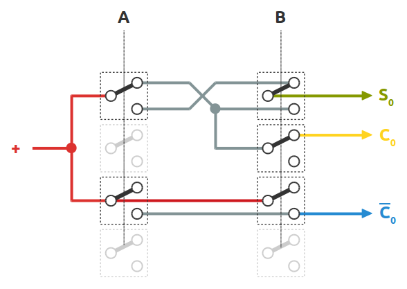Il circuito del semi-sommatore
Di ogni deviatore sono evidenziati i soli poli utilizzati. Per convenzione ho assegnato la posizione del contatto in alto allo stato logico 1, quella in basso allo 0. Secondo questa logica, gli stati delle linee del circuito sono i seguenti:
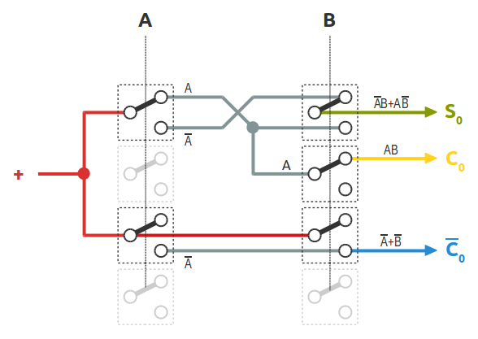Gli stati logici delle linee del semi-sommatore
Adottando la stessa convenzione circa la posizione del contatto del deviatore usata per il semi-sommatore, ecco una prima versione del circuito del sommatore completo:
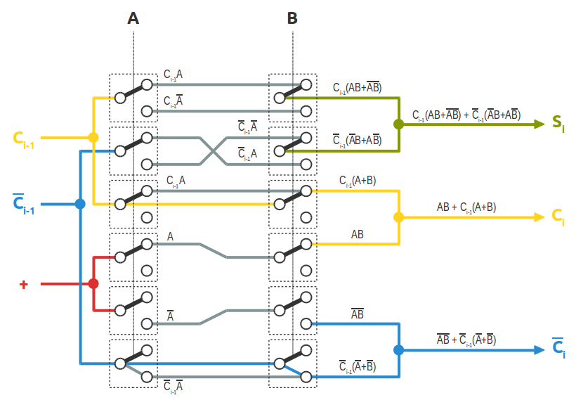Gli stati logici delle linee del sommatore completo
Così configurato, il circuito del sommatore completo richiede l'uso di deviatori a sei poli, difficili da trovare in commercio. In rete ho trovato una versione molto più compatta del circuito, ideata da Konrad Zuse per il suo calcolatore elettromeccanico Z3 attorno al 1941. Usa una sintesi diversa, sebbene equivalente, per la determinazione del riporto e del suo negato, come si può evincere dallo schema sottostante:
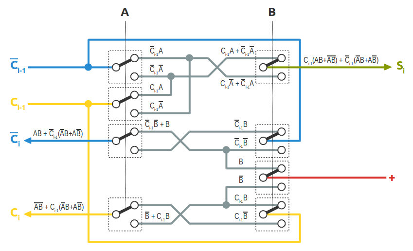Il sommatore di Konrad Zuse basato su due deviatori a quattro vie
Le espressioni dei riporti ricavata dalla tabella di verità del sommatore completo sono:
Ci = AiBi + Ci-1(Ai + Bi)
Ci = AiBi + Ci-1(Ai + Bi)
mentre quelle utilizzate da Zuse nel suo sommatore sono:
Ci = AiBi + Ci-1(AiBi + AiBi)
Ci = AiBi + Ci-1(AiBi + AiBi)
Mi sono rifornito del materiale necessario in un negozio di elettronica, dove ho reperito i deviatori a quattro vie, i LED e alcune matasse di filo colorato che spero agevolino il lavoro di cablatura del circuito.
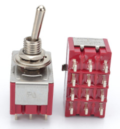Uno dei deviatori a quattro vie acquistati
Ho temporaneamente disposto i deviatori su un supporto in cartoncino in attesa di trovare una scatola adatta a contenere il circuito finale:
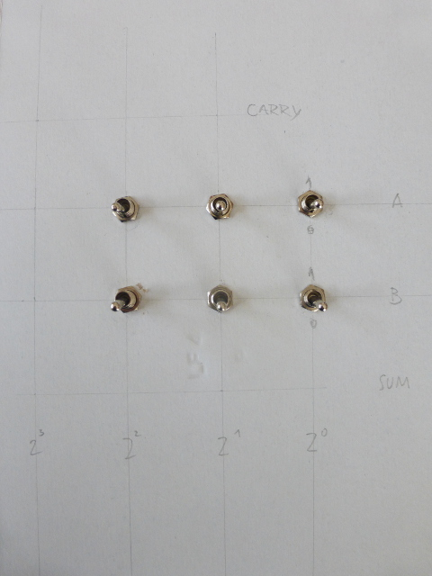Il supporto temporaneo in cartoncino con i deviatori già montati
Data la sua semplicità, ho potuto verificare preliminarmente il circuito del semi-sommatore con i (pochi) connettori a coccodrillo di cui dispongo:
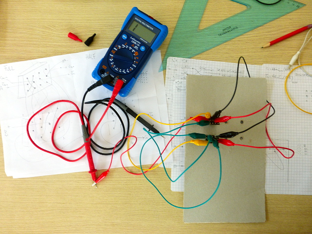Verifica del circuito del semi-sommatore con i connettori a coccodrillo
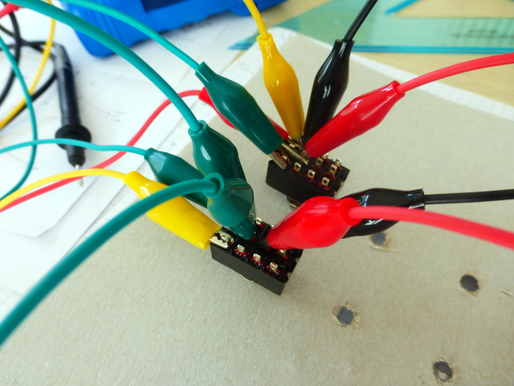Dettaglio del circuito del semi-sommatore temporaneo
Per ognuna delle quattro configurazioni dei bit in ingresso A0 e B0 ho verificato che ci fosse continuità elettrica tra i terminali d'uscita (somma/riporto) e la linea di alimentazione solo nei casi in cui l'uscita corrisponde al livello logico 1. Una volta accertato il corretto funzionamento del circuito del semi-sommatore, ho proceduto con la cablatura definitiva. Al semi-sommatore sono seguiti i due sommatori, realizzati secondo lo schema di Zuse:
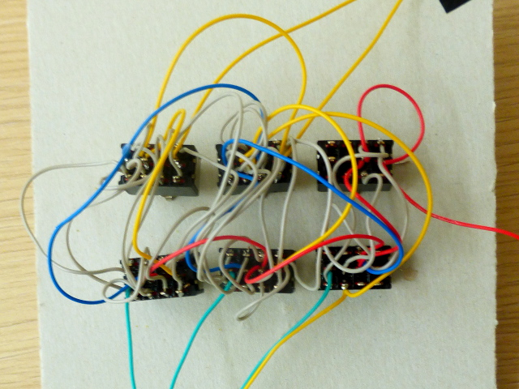Il sommatore a tre bit completo
Ultimato il lavoro di saldatura ho verificato il corretto funzionamento dell'intero circuito sfruttando la scheda Arduino per ricavare la tensione di alimentazione (5V) e la sua bread-board per collegare i LED che rappresentano il risultato del sommatore. Le resistenze limitatrici sono da 220Ω per una corrente diretta sui LED di circa 14mA, considerando una caduta di tensione su di essi vicina ai 2V:
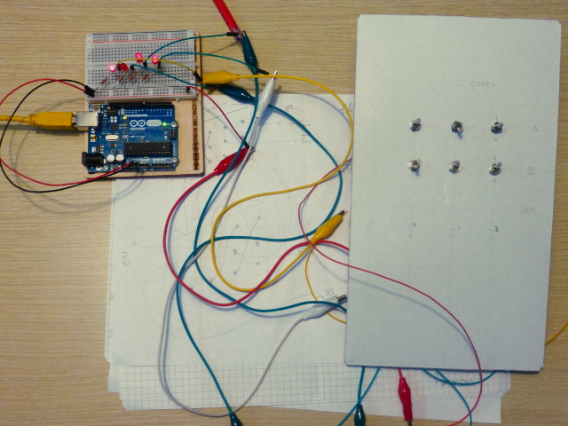Test di funzionamento del sommatore
Solo a questo punto mi sono reso conto di aver cablato il semi-sommatore dal lato sbagliato del pannello; visto frontalmente, esso si trova infatti a sinistra, non a destra, posizione naturale del bit meno significativo! Ho deciso allora di segmentare il circuito, e per farlo ho usato alcuni cavetti Dupont:
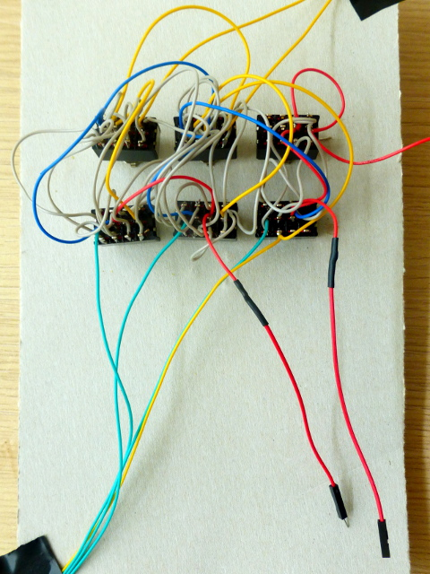La prima segmentazione: l'alimentazione tra il semi-sommatore e il primo sommatore completo
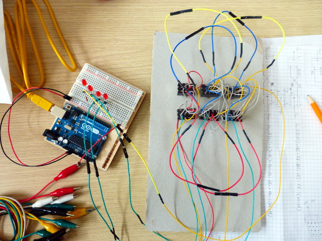Verfica del circuito a segmentazione completata
Dove trovare un contenitore grande a sufficienza per ospitare il circuito e che sia dotato di un frontalino adatto per il montaggio dei deviatori e dei LED? La scelta è ricaduta su una scatola di derivazione Gweiss, comprata per pochi spiccioli in ferramenta:
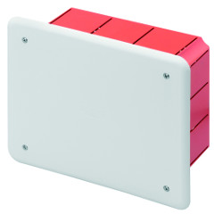La scatola di derivazione che ospiterà il circuito del sommatore
Dopo aver forato il coperchio della scatola di derivazione in corrispondenza delle posizioni dei deviatori e dei LED, ho smontato il circuito dal supporto temporaneo in cartoncino e l'ho montato sul frontalino di plastica:
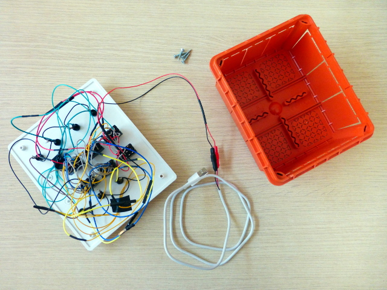Il circuito rimontato sul coperchio della scatola di derivazione
Per l'alimentazione ho riciclato un cavo di ricarica per cellulare che aveva la presa micro-USB difettosa. Ecco l'aspetto finale del sommatore binario:
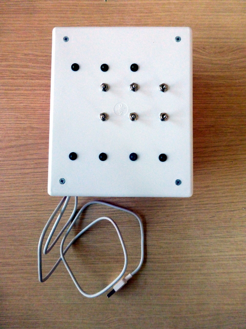Il circuito sommatore nella sua veste definitiva
Ho predisposto una maschera che aiuta a interpretare il funzionamento del circuito:
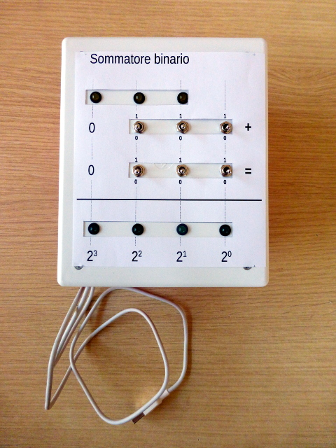Il primo prototipo della maschera esplicativa applicata al frontalino
Il sommatore all'opera
Nella realizzare il circuito ho invertito la corrispondenza tra la posizione del contatto del deviatore e lo stato logico associato. Quando la levetta del deviatore si trova in alto (posizione associata allo stato logico 1), internamente il contatto avviene tra il terminale centrale e quello sottostante; quando la levetta è in basso (posizione associata allo stato logico 0), il contatto è stabilito tra il terminale centrale e quello superiore:
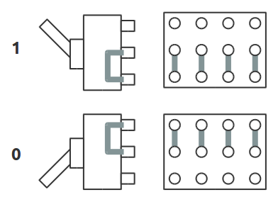Relazione tra la posizione della levetta e contatti del deviatore
Per questa ragione la cablatura dei due circuiti risulta invertita verticalmente:
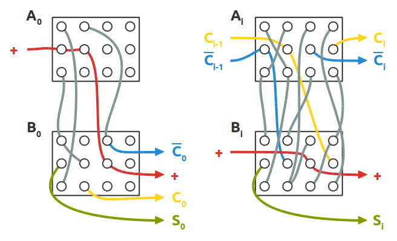Vista posteriore delle cablature del semi-sommatore e del sommatore completo
Lo schema elettrico completo del circuito è rappresentato qui sotto; nel mio caso al posto delle lampadine ho usato dei LED con una resistenza da 220Ω in serie. Il circuito può essere usato in sicurezza con una tensione di alimentazione non superiore ai 6V.
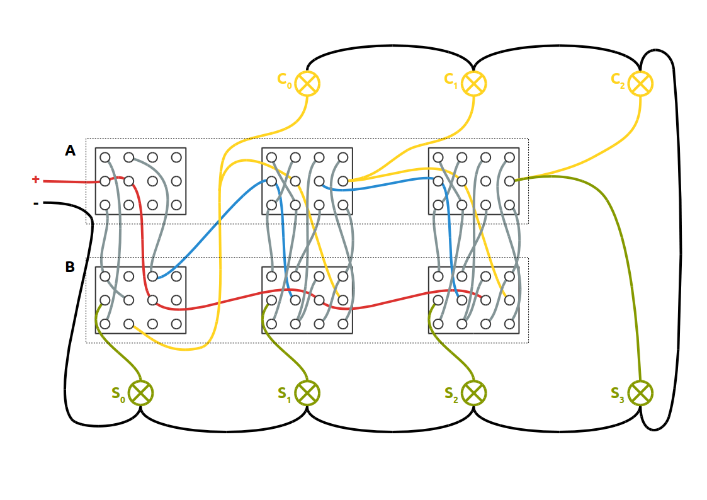Schema elettrico completo (click sull'immagine per ingrandirla)
Pagina modificata il 21/04/2019